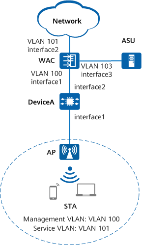

Example for Configuring a WAPI-Certificate Security Policy
Networking Requirements
Because the WLAN is open to users, there are potential security risks to enterprise information if no security policy is configured for the WLAN. To meet enterprise's high information security requirement and implement bidirectional authentication between the WLAN clients and server, configure a WAPI security policy. Compared with WPA/WPA2, an ASU certificate server and WAPI encryption provide higher security for WLAN networks.
WAPI-certificate authentication has no special requirements for networking. Before configuring this security policy, ensure that the network is connected and APs can go online. For details about the basic networking example, see Configuration Examples for WLAN STA Management.

In this example, interface1, interface2, and interface3 represent 10GE0/0/1, 10GE0/0/2, and 10GE0/0/3, respectively.

To complete the configuration, you need the following data:
- Management VLAN for APs: VLAN 100; service VLAN for STAs: VLAN 101; WAC interface connected to the ASU server: VLAN 103
- IP address pool for APs: 10.23.100.2 to 10.23.100.254/24
- IP address pool for STAs: 10.23.101.2 to 10.23.101.254/24
- WAC's source interface and its IP address: 10GE 100 at 10.23.100.1/24
- AP group name: ap-group1
- SSID profile name: wlan-ssid; SSID name: wlan-net
- Security profile name: wlan-security; security policy: WAPI-certificate
- VAP profile name: wlan-vap
- IP address of the ASU certificate server: 10.23.103.1
- PKI realm name: abc
- Name of the ECC key pair: test
- CA certificate and local certificate in PEM format
Configuration Roadmap
- Configure STA access services so that STAs can access the WLAN properly.
- Configure a WAPI security policy using certificate authentication in a security profile to ensure data security.
Precautions
- No ACK mechanism is available for multicast packet transmission over unstable wireless links of air interfaces. For this reason, multicast packets are usually sent at low rates to ensure stable transmission. However, if a large number of multicast packets are sent from the network side, air interfaces may be congested. Therefore, you are advised to configure multicast packet suppression to reduce the impact of numerous low-rate multicast packets on the wireless network. Exercise caution when configuring the rate limit if there are multicast services on the network, as this may affect the multicast services.
- In direct forwarding mode, you are advised to configure multicast packet suppression on the interfaces of a switch connected to APs.
The port isolation configuration is recommended on the ports of the device directly connected to APs. If port isolation is not configured and direct forwarding is used, a large number of unnecessary broadcast packets may be generated in the VLAN, blocking the network and degrading user experience.
Procedure
- Import the ECC key pair and certificate to the device memory.
[WAC] pki import ecc-key-pair test pem ca.cer
- Create a PKI realm.
[WAC] pki realm abc [WAC-pki-realm-abc] quit
- Import the CA certificate and local certificate in PEM format to the PKI realm.
- Before configuring WAPI-certificate authentication, you need to download and install the certificate on the ASU server. For details, see the operation guide of the ASU server.
- Certificates to be imported must be valid and correct.
[WAC] pki import-certificate ca realm abc pem filename ca.cer The CA's Subject is /C=CN/ST=Zhejiang/L=Hangzhou/O=Huawei/OU=FW/CN=bzh1_sha256 The CA's fingerprint is: SHA1 fingerprint:C4:4C:0D:F8:BF:D8:44:2C:30:50:51:44:B9:0B:64:31:C0:0B:3C:A7 SHA256 fingerprint:05:F0:F9:E4:8B:F7:63:41:9B:A4:2B:59:59:E9:82:6D:74:9D:A4:06:37:9F:FA:E5:E0:3E:C6:4C:DA:34:98:04 Is the fingerprint correct? [Y/N]:y Info: Succeeded in importing the certificate. Warning: The file in the flash will be deleted. Please select 'N' if you want to keep it. Please select [Y/N]:n Info: The file will keep in the flash. [WAC] pki import-certificate local realm abc pem filename local.cer Info: Succeeded in importing the certificate. Warning: The file in the flash will be deleted. Please select 'N' if you want to keep it. Please select [Y/N]:n Info: The file will keep in the flash.
- Create the security profile wlan-security and configure a WAPI security policy in the profile.
[WAC] wlan [WAC-wlan] security-profile name wlan-security [WAC-wlan-sec-prof-wlan-security] security wapi certificate
- Bind the PKI realm.
[WAC-wlan-sec-prof-wlan-security] wapi certificate pki realm abc
- Configure an IP address for the ASU server.
[WAC-wlan-sec-prof-wlan-security] wapi asu ip 10.23.103.1 [WAC-wlan-sec-prof-wlan-security] quit
- Create the SSID profile wlan-ssid and set the SSID name to wlan-net.
[WAC-wlan] ssid-profile name wlan-ssid [WAC-wlan-ssid-prof-wlan-ssid] ssid wlan-net [WAC-wlan-ssid-prof-wlan-ssid] quit
- Create the VAP profile wlan-vap, set the service data forwarding mode and service VLAN, and bind the security profile and SSID profile to the VAP profile.
[WAC-wlan] vap-profile name wlan-vap [WAC-wlan-vap-prof-wlan-vap] service-vlan vlan-id 101 [WAC-wlan-vap-prof-wlan-vap] security-profile wlan-security [WAC-wlan-vap-prof-wlan-vap] ssid-profile wlan-ssid [WAC-wlan-vap-prof-wlan-vap] quit
- Bind the VAP profile wlan-vap to radios 0 and 1 of APs in the AP group ap-group1.
[WAC-wlan] ap-group name ap-group1 [WAC-wlan-ap-group-ap-group1] vap-profile wlan-vap wlan 1 radio 0 [WAC-wlan-ap-group-ap-group1] vap-profile wlan-vap wlan 1 radio 1 [WAC-wlan-ap-group-ap-group1] quit
Verifying the Configuration
# Run the display security-profile command to check information about a security profile.
[WAC] display security-profile name wlan-security ------------------------------------------------------------ Security policy : WAPI certificate Encryption : SMS4 ------------------------------------------------------------ WPA's configuration PTK update : disable PTK update interval(s) : 43200 Group key negotiation : enable ------------------------------------------------------------ WAPI's configuration PKI realm : abc Authentication server IP : 10.23.103.1 WAI timeout(s) : 60 BK update interval(s) : 43200 BK lifetime threshold(%) : 70 USK update method : Time-based USK update interval(s) : 86400 MSK update method : Time-based MSK update interval(s) : 86400 Cert auth retrans count : 3 USK negotiate retrans count : 3 MSK negotiate retrans count : 3 ------------------------------------------------------------
# Run the display pki ecc local-key-pair public command to check information about the ECC key pair and public key.
[WAC] display pki ecc local-key-pair public
Info: It will take a few seconds or more. Please wait a moment.
Total Number: 1
=====================================================
Time of Key pair created: 20:09:46 2022/12/13
Key Name: test
Key Modules: 192 bits
Key Exportable: No
=====================================================
Public-Key: (192 bits)
pub:
04:bb:4e:ae:de:5c:72:40:f9:82:d4:b2:60:6b:b7:
2b:cd:a1:00:7d:4e:2a:3f:77:63:8e:64:d4:a4:dd:
2e:60:5f:81:8f:ec:f9:04:3c:90:f0:1f:b1:b7:91:
dd:2a:fc:09
ASN1 OID: ec192wapi
------------------------------------------------------------
# Run the display pki certificate local realm cert command to check information about the local certificate.
[WAC] display pki certificate local realm cert
Info: It will take a few seconds or more to collect data for displaying. Please wait a moment.
Total Number: 1
Certificate:
Data:
Version: 3 (0x2)
Serial Number: 541965987 (0x204dbea3)
Signature Algorithm: ec192wapi-with-SHA256
Issuer: DC=WAPI, C=CN, O=BJCAWAPI, OU=BJCAWAPI, CN=BJCAWAPI@ASU
Validity
Not Before: Sep 22 04:01:13 2022 GMT
Not After : Dec 30 16:00:00 2022 GMT
Subject: DC=WAPI, C=CN, O=0001, OU=CS.HN, CN=local@AE
Subject Public Key Info:
Public Key Algorithm: id-ecPublicKey
Public-Key: (192 bit)
pub:
04:64:37:8f:47:77:84:33:60:b0:0a:31:85:f3:19:
0b:e2:ce:39:e6:01:6a:2f:f2:e6:7d:df:20:03:23:
d6:11:aa:84:92:65:68:cc:f6:d8:32:c6:cc:fd:78:
ad:47:0d:7d
ASN1 OID: ec192wapi
X509v3 extensions:
X509v3 Basic Constraints: critical
CA:FALSE
2.16.840.1.113732.2:
..28:68:d2:44:de:61
X509v3 Key Usage:
Digital Signature, Non Repudiation
Signature Algorithm: ec192wapi-with-SHA256
30:34:02:18:2c:6f:cc:67:d9:02:6f:4b:50:cc:90:9c:5a:7b:
74:f8:4b:86:4c:b3:c6:8f:13:63:02:18:4c:80:d4:29:7e:4c:
aa:9e:66:22:d3:ae:59:fd:39:5b:08:0d:24:8b:df:26:5f:9b
Pki realm name: abc
Certificate file name: local.cer
Certificate peer name: -
------------------------------------------------------------
# Run the display pki certificate ca realm cert command to check information about the CA certificate.
[WAC] display pki certificate ca realm cert
Info: It will take a few seconds or more to collect data for displaying. Please wait a moment.
Total Number: 1
Certificate:
Data:
Version: 3 (0x2)
Serial Number:
84:b7:ae:88:71:62:c6:91
Signature Algorithm: sha256WithRSAEncryption
Issuer: C=CN, ST=JS, L=NJ, O=HW, OU=VPN, CN=CA-101930058418
Validity
Not Before: Apr 14 14:25:55 2021 GMT
Not After : Apr 14 14:25:55 2031 GMT
Subject: C=CN, ST=JS, L=NJ, O=HW, OU=VPN, CN=CA-101930058418
Subject Public Key Info:
Public Key Algorithm: rsaEncryption
RSA Public-Key: (2048 bits)
Modulus:
00:b0:02:ab:fb:06:37:2f:96:77:17:db:a1:3d:1a:
b7:9c:36:8a:0c:4b:91:eb:30:6e:ca:e6:54:d4:a2:
60:d2:c4:1b:6c:0b:c1:69:57:d1:85:9b:99:c4:49:
b6:73:dd:5a:34:9e:86:2f:a6:f0:2f:25:91:81:05:
26:a0:77:c4:e2:38:43:42:3c:92:59:1f:5a:04:c9:
09:b9:d2:e6:2c:69:c1:23:23:30:51:c3:d3:5a:e7:
0e:db:3d:0a:bc:3a:11:91:82:04:3e:a7:57:91:ce:
e0:06:3b:b7:b9:f2:bc:ae:2c:82:f4:73:1b:0c:e1:
55:a4:f4:54:ff:d3:40:fe:8f:05:3e:fa:24:57:3f:
f1:c9:2e:ae:18:1d:37:eb:59:cc:82:5d:92:c9:8d:
88:c9:4f:fa:ee:d8:d8:14:fa:98:fa:fd:26:e7:f1:
b8:40:11:44:b7:54:94:6f:04:4e:39:7d:8c:b8:fe:
6f:3e:c2:9b:6c:58:2d:dc:23:70:aa:f4:9f:5a:d4:
7a:db:5f:f4:df:39:09:97:d4:db:0e:89:da:4e:c5:
c8:f5:76:10:62:14:62:4c:8e:e8:23:49:2c:37:32:
1a:0f:cd:49:5b:cd:bf:c2:cc:12:8b:de:6a:67:e5:
5d:07:53:0d:fd:f1:5c:2d:e8:72:5b:34:38:57:8f:
be:b3
Exponent: 65537 (0x10001)
X509v3 extensions:
X509v3 Basic Constraints: critical
CA:TRUE
X509v3 Subject Key Identifier:
DA:39:A3:EE:5E:6B:4B:0D:32:55:BF:EF:95:60:18:90:AF:D8:07:09
X509v3 Key Usage:
Digital Signature, Key Encipherment, Key Agreement, Certificate Sign, CRL Sign
Signature Algorithm: sha256WithRSAEncryption
50:1f:87:20:2f:fb:9e:99:9a:81:54:82:52:c5:c8:c8:c2:ba:
96:ef:93:34:e0:b2:13:52:50:7c:55:3d:34:29:e4:5b:b9:50:
60:1b:b8:a3:6a:3a:d1:e1:c7:f9:44:fa:0a:37:0f:35:b6:2b:
bb:fa:8a:83:06:a6:46:43:c2:04:41:c5:94:fa:b3:bd:62:1a:
82:20:5f:6e:23:fb:96:13:17:74:34:f9:92:44:93:68:d8:35:
f1:18:60:10:0b:0a:60:fb:71:dd:f3:8f:36:32:e9:e8:aa:a9:
e7:51:cd:f3:49:be:94:eb:5a:4d:9b:e1:2e:0f:5b:da:76:c8:
4d:a4:60:56:1c:cc:9f:d4:62:cf:64:d6:68:4b:18:13:84:27:
89:93:a2:aa:fb:01:27:94:69:33:17:74:55:60:7a:31:b6:99:
17:98:ce:19:a6:48:4b:d8:c4:d7:d3:c0:25:ac:03:3c:c6:da:
d7:15:50:06:c4:e4:41:72:09:5c:85:b8:e0:d8:9d:21:db:f5:
94:e1:1c:a0:e6:8a:a1:9e:1b:83:d5:52:5c:33:61:e7:d6:a8:
ee:31:57:81:96:20:05:7d:3a:09:ed:20:7d:39:6d:47:59:c0:
c0:10:79:a8:b9:5c:56:ca:bd:7d:39:57:3b:71:a8:6d:6c:5d:
aa:df:1f:a2
Pki realm name: abc
Certificate file name: ca.cer
Certificate peer name: -
------------------------------------------------------------
# Run the display vap all command to check the VAP authentication mode based on the Auth type field.
# STAs can discover the WLAN with the SSID wlan-net and successfully access the WLAN after users enter the correct key.
Configuration Scripts
- WAC
# sysname WAC # pki realm abc # wlan security-profile name wlan-security security wapi certificate wapi asu ip 10.23.103.1 wapi certificate pki realm abc ssid-profile name wlan-ssid ssid wlan-net vap-profile name wlan-vap service-vlan vlan-id 101 ssid-profile wlan-ssid security-profile wlan-security ap-group name ap-group1 radio 0 vap-profile wlan-vap wlan 1 radio 1 vap-profile wlan-vap wlan 1 # return